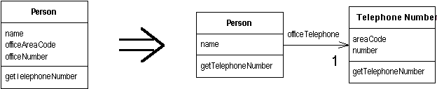

Extract Class
You have one class doing work that should be done by two.
Create a new class and move the relevant fields and methods from the old class into the new class.

For more information see page
149
of Refactoring
| Refactoring Home | | Alphabetical List |